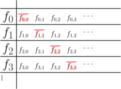

3.4 Die Cantorsche Diagonalisation: ./course1/wly/03/04-diagonalization.wly:2:11$\N \not \approx \R$./course1/wly/03/04-diagonalization.wly:2:43
3.4 Die Cantorsche Diagonalisation: ./course1/wly/03/04-diagonalization.wly:2:11$\N \not \approx \R$./course1/wly/03/04-diagonalization.wly:2:43
Vielleicht war es überraschend zu sehen, dass ./course1/wly/03/04-diagonalization.wly:4:5$\N = \Q$./course1/wly/03/04-diagonalization.wly:4:51 ./course1/wly/03/04-diagonalization.wly:4:60 gilt, dass also das "diskrete" ./course1/wly/03/04-diagonalization.wly:5:5$\N$./course1/wly/03/04-diagonalization.wly:5:36 und das "dichte" ./course1/wly/03/04-diagonalization.wly:5:40$\Q$./course1/wly/03/04-diagonalization.wly:5:58 ./course1/wly/03/04-diagonalization.wly:5:62 sicht hinsichtlich ihrer Größe (Fachsprache: Kardinalität)./course1/wly/03/04-diagonalization.wly:6:5 nicht unterscheiden. Könnte es denn sein, dass jede./course1/wly/03/04-diagonalization.wly:7:5 unendliche Menge ./course1/wly/03/04-diagonalization.wly:8:5$A$./course1/wly/03/04-diagonalization.wly:8:22 abzählbar ist, also ./course1/wly/03/04-diagonalization.wly:8:25$A \approx \N$./course1/wly/03/04-diagonalization.wly:8:46?./course1/wly/03/04-diagonalization.wly:8:60 ./course1/wly/03/04-diagonalization.wly:8:60 Die Antwort ist ein klares ./course1/wly/03/04-diagonalization.wly:9:5Nein./course1/wly/03/04-diagonalization.wly:9:33../course1/wly/03/04-diagonalization.wly:9:38
Theorem 3.4.1 (Überabzählbarkeit der reellen Zahlen)../course1/wly/03/04-diagonalization.wly:11:5 ./course1/wly/03/04-diagonalization.wly:12:50 ./course1/wly/03/04-diagonalization.wly:13:9$\N \not \approx \R$./course1/wly/03/04-diagonalization.wly:13:9 ../course1/wly/03/04-diagonalization.wly:13:29
Beweis Da wir bereits ./course1/wly/03/04-diagonalization.wly:16:9$\R \approx \{0,1\}^{\N}$./course1/wly/03/04-diagonalization.wly:16:24 gesehen haben,./course1/wly/03/04-diagonalization.wly:16:49 reicht es, ./course1/wly/03/04-diagonalization.wly:17:9$\N \not \approx \{0,1\}^{\N}$./course1/wly/03/04-diagonalization.wly:17:20 zu zeigen. Wir./course1/wly/03/04-diagonalization.wly:17:50 müssen also zeigen, dass es keine Bijektion./course1/wly/03/04-diagonalization.wly:18:9 ./course1/wly/03/04-diagonalization.wly:19:9$f : \N \rightarrow \{0,1\}^{\N}$./course1/wly/03/04-diagonalization.wly:19:9 gibt. Wie gehen wir vor?./course1/wly/03/04-diagonalization.wly:19:42 Wir nehmen an, man hätte uns eine Funktion./course1/wly/03/04-diagonalization.wly:20:9 ./course1/wly/03/04-diagonalization.wly:21:9$f : \N \rightarrow \cuben$./course1/wly/03/04-diagonalization.wly:21:9 gegeben, und müssen nun./course1/wly/03/04-diagonalization.wly:21:36 zeigen, dass ./course1/wly/03/04-diagonalization.wly:22:9$f$./course1/wly/03/04-diagonalization.wly:22:22 nicht bijektiv ist. Nicht bijektiv kann./course1/wly/03/04-diagonalization.wly:22:25 zwei Ding heißen: nicht injektiv und nicht surjekiv../course1/wly/03/04-diagonalization.wly:23:9 Injektiv kann eine solche Funktion natürlich sein,./course1/wly/03/04-diagonalization.wly:24:9 beispielsweise die Funktion ./course1/wly/03/04-diagonalization.wly:25:9$n \mapsto 0^n 111111\dots$./course1/wly/03/04-diagonalization.wly:25:37../course1/wly/03/04-diagonalization.wly:25:64 ./course1/wly/03/04-diagonalization.wly:25:64 Also ist unsere einzige Chance, zu zeigen, dass ./course1/wly/03/04-diagonalization.wly:26:9$f$./course1/wly/03/04-diagonalization.wly:26:57 nicht./course1/wly/03/04-diagonalization.wly:26:60 surjektiv ist. Wir müssen also eine 0/1-Folge./course1/wly/03/04-diagonalization.wly:27:9 ./course1/wly/03/04-diagonalization.wly:28:9$\mathbf{b} = b_0 b_1 b_2 b_3 \dots \in \{0,1\}^{\N}$./course1/wly/03/04-diagonalization.wly:28:9 ./course1/wly/03/04-diagonalization.wly:28:62 finden, die nicht im Wertebereich (Englisch: ./course1/wly/03/04-diagonalization.wly:29:9image./course1/wly/03/04-diagonalization.wly:29:55)./course1/wly/03/04-diagonalization.wly:29:61 von./course1/wly/03/04-diagonalization.wly:29:61 ./course1/wly/03/04-diagonalization.wly:30:9$f$./course1/wly/03/04-diagonalization.wly:30:9 liegt: ./course1/wly/03/04-diagonalization.wly:30:12$\mathbf{b} \not \in {\rm img}(f)$./course1/wly/03/04-diagonalization.wly:30:20../course1/wly/03/04-diagonalization.wly:30:54 Was./course1/wly/03/04-diagonalization.wly:30:54 wiederum bedeutet, dass für jedes ./course1/wly/03/04-diagonalization.wly:31:9$n \in \N$./course1/wly/03/04-diagonalization.wly:31:43 sich die./course1/wly/03/04-diagonalization.wly:31:53 unendliche 0/1-Folge ./course1/wly/03/04-diagonalization.wly:32:9$f(n)$./course1/wly/03/04-diagonalization.wly:32:30 von ./course1/wly/03/04-diagonalization.wly:32:36$\mathbf{b}$./course1/wly/03/04-diagonalization.wly:32:41 ./course1/wly/03/04-diagonalization.wly:32:53 unterscheidet, also an mindestens einer Stelle. Wie können./course1/wly/03/04-diagonalization.wly:33:9 wir die Funktion ./course1/wly/03/04-diagonalization.wly:34:9$f$./course1/wly/03/04-diagonalization.wly:34:26 darstellen? Jedes ./course1/wly/03/04-diagonalization.wly:34:29$f(n)$./course1/wly/03/04-diagonalization.wly:34:48 ist eine./course1/wly/03/04-diagonalization.wly:34:54 unendliche ./course1/wly/03/04-diagonalization.wly:35:9$0/1$./course1/wly/03/04-diagonalization.wly:35:20-Folge../course1/wly/03/04-diagonalization.wly:35:25 Also können wir uns ./course1/wly/03/04-diagonalization.wly:35:25$f$./course1/wly/03/04-diagonalization.wly:35:53 als nach./course1/wly/03/04-diagonalization.wly:35:56 rechts und nach unten unendliche Tabelle vorstellen../course1/wly/03/04-diagonalization.wly:36:9 Hierbei schreiben wir ./course1/wly/03/04-diagonalization.wly:37:9$f_i$./course1/wly/03/04-diagonalization.wly:37:31 für ./course1/wly/03/04-diagonalization.wly:37:36$f(i)$./course1/wly/03/04-diagonalization.wly:37:42 und ./course1/wly/03/04-diagonalization.wly:37:48$f_{i,j}$./course1/wly/03/04-diagonalization.wly:37:53 für./course1/wly/03/04-diagonalization.wly:37:62 das ./course1/wly/03/04-diagonalization.wly:38:9$j$./course1/wly/03/04-diagonalization.wly:38:13 -te Glied der unendlichen Folge ./course1/wly/03/04-diagonalization.wly:38:16$f_i$./course1/wly/03/04-diagonalization.wly:38:49../course1/wly/03/04-diagonalization.wly:38:54
Für ein Bit ./course1/wly/03/04-diagonalization.wly:45:9$b \in \{0,1\}$./course1/wly/03/04-diagonalization.wly:45:21 bezeichnen wir mit ./course1/wly/03/04-diagonalization.wly:45:36$\bar{b}$./course1/wly/03/04-diagonalization.wly:45:56 ./course1/wly/03/04-diagonalization.wly:45:65 seine Negation: ./course1/wly/03/04-diagonalization.wly:46:9$\bar{b} = 1 - b$./course1/wly/03/04-diagonalization.wly:46:25../course1/wly/03/04-diagonalization.wly:46:42 Wir betrachten jetzt./course1/wly/03/04-diagonalization.wly:46:42 die Diagonale der Tabelle und negieren sie:./course1/wly/03/04-diagonalization.wly:47:9

course1/public/img/infinite-sets/cantor-diagonal.svgund erhalten eine Folge:./course1/wly/03/04-diagonalization.wly:54:9 ./course1/wly/03/04-diagonalization.wly:55:9$\mathbf{d} := \overline{f_{0,0}}\ \overline{f_{1,1}}\ \overline{f_{2,2}} \overline{f_{3,3}}\dots$./course1/wly/03/04-diagonalization.wly:55:9../course1/wly/03/04-diagonalization.wly:56:52 ./course1/wly/03/04-diagonalization.wly:56:52 Vergleichen wir nun ./course1/wly/03/04-diagonalization.wly:57:9$\mathbf{d}$./course1/wly/03/04-diagonalization.wly:57:29 mit einer Zeile ./course1/wly/03/04-diagonalization.wly:57:41$f_n$./course1/wly/03/04-diagonalization.wly:57:58 der./course1/wly/03/04-diagonalization.wly:57:63 obigen Tabelle. Insbesondere, die ./course1/wly/03/04-diagonalization.wly:58:9$n$./course1/wly/03/04-diagonalization.wly:58:43-ten./course1/wly/03/04-diagonalization.wly:58:46 Stellen der./course1/wly/03/04-diagonalization.wly:58:46 beiden Folgen. Die ./course1/wly/03/04-diagonalization.wly:59:9$n$./course1/wly/03/04-diagonalization.wly:59:28-te./course1/wly/03/04-diagonalization.wly:59:31 Stelle von ./course1/wly/03/04-diagonalization.wly:59:31$\mathbf{d}$./course1/wly/03/04-diagonalization.wly:59:46 ist./course1/wly/03/04-diagonalization.wly:59:58 ./course1/wly/03/04-diagonalization.wly:60:9$\overline{f_{n,n}}$./course1/wly/03/04-diagonalization.wly:60:9;./course1/wly/03/04-diagonalization.wly:60:29 die ./course1/wly/03/04-diagonalization.wly:60:29$n$./course1/wly/03/04-diagonalization.wly:60:35-te./course1/wly/03/04-diagonalization.wly:60:38 Stelle von ./course1/wly/03/04-diagonalization.wly:60:38$f_n$./course1/wly/03/04-diagonalization.wly:60:53 ist./course1/wly/03/04-diagonalization.wly:60:58 ./course1/wly/03/04-diagonalization.wly:61:9$f_{n,n}$./course1/wly/03/04-diagonalization.wly:61:9../course1/wly/03/04-diagonalization.wly:61:18 Wir sehen also: ./course1/wly/03/04-diagonalization.wly:61:18$\mathbf{d}$./course1/wly/03/04-diagonalization.wly:61:36 und ./course1/wly/03/04-diagonalization.wly:61:48$f_n$./course1/wly/03/04-diagonalization.wly:61:53 ./course1/wly/03/04-diagonalization.wly:61:58 unterscheiden sich an der ./course1/wly/03/04-diagonalization.wly:62:9$n$./course1/wly/03/04-diagonalization.wly:62:35-ten./course1/wly/03/04-diagonalization.wly:62:38 Stelle (und womöglich./course1/wly/03/04-diagonalization.wly:62:38 auch noch anderswo), und daher gilt: ./course1/wly/03/04-diagonalization.wly:63:9$\mathbf{d} \ne f_n$./course1/wly/03/04-diagonalization.wly:63:46../course1/wly/03/04-diagonalization.wly:63:66 ./course1/wly/03/04-diagonalization.wly:63:66 Da dies für jedes ./course1/wly/03/04-diagonalization.wly:64:9$n$./course1/wly/03/04-diagonalization.wly:64:27 gilt, folgern wir: die Folge./course1/wly/03/04-diagonalization.wly:64:30 ./course1/wly/03/04-diagonalization.wly:65:9$\mathbf{d}$./course1/wly/03/04-diagonalization.wly:65:9 kommt nicht als Zeile der Tabelle vor, und./course1/wly/03/04-diagonalization.wly:65:21 damit ./course1/wly/03/04-diagonalization.wly:66:9$\mathbf{d} \not \in {\rm img}(f)$./course1/wly/03/04-diagonalization.wly:66:15../course1/wly/03/04-diagonalization.wly:66:49 Die Funktion ./course1/wly/03/04-diagonalization.wly:66:49$f$./course1/wly/03/04-diagonalization.wly:66:64 ./course1/wly/03/04-diagonalization.wly:66:67 ist nicht surjektiv../course1/wly/03/04-diagonalization.wly:67:9A\(\square\)
Weil in dem Beweis die Diagonale der Tabelle eine./course1/wly/03/04-diagonalization.wly:69:5 entscheidende Rolle spielt, nennt man diese Beweistechnik./course1/wly/03/04-diagonalization.wly:70:5 auch das Cantorsche Diagonalisierungsverfahren. Dies wird./course1/wly/03/04-diagonalization.wly:71:5 später, in ./course1/wly/03/04-diagonalization.wly:72:5Kapitel 8 über Turingmaschinen./course1/wly/03/04-diagonalization.wly:72:5 und in ./course1/wly/03/04-diagonalization.wly:73:5Kapitel 9 über Komplexitätstheorie./course1/wly/03/04-diagonalization.wly:73:5 eine Rolle spielen, wenn wir z.B. zeigen wollen, dass es./course1/wly/03/04-diagonalization.wly:74:5 Probleme gibt, an denen jedes Computerprogram versagt../course1/wly/03/04-diagonalization.wly:75:5
Übungsaufgabe 3.4.1./course1/wly/03/04-diagonalization.wly:77:5 ./course1/wly/03/04-diagonalization.wly:77:5 Zeigen Sie, dass es zu der Funktion./course1/wly/03/04-diagonalization.wly:78:9 ./course1/wly/03/04-diagonalization.wly:79:9$f: \N \rightarrow \cuben$./course1/wly/03/04-diagonalization.wly:79:9 eine Folge ./course1/wly/03/04-diagonalization.wly:79:35$\mathbf{d}$./course1/wly/03/04-diagonalization.wly:79:47 gibt,./course1/wly/03/04-diagonalization.wly:79:59 die nicht nur nicht in ./course1/wly/03/04-diagonalization.wly:80:9${\rm img}(f)$./course1/wly/03/04-diagonalization.wly:80:32 ist, sondern noch./course1/wly/03/04-diagonalization.wly:80:46 mehr: jede Folge ./course1/wly/03/04-diagonalization.wly:81:9$f_n$./course1/wly/03/04-diagonalization.wly:81:26 unterscheidet sich von ./course1/wly/03/04-diagonalization.wly:81:31$\mathbf{d}$./course1/wly/03/04-diagonalization.wly:81:55 ./course1/wly/03/04-diagonalization.wly:81:67 in unendlich vielen Stellen../course1/wly/03/04-diagonalization.wly:82:9
Übungsaufgabe 3.4.2./course1/wly/03/04-diagonalization.wly:84:5 ./course1/wly/03/04-diagonalization.wly:84:5 Zeigen Sie ganz allgemein: für jede Menge ./course1/wly/03/04-diagonalization.wly:85:9$A$./course1/wly/03/04-diagonalization.wly:85:51 gilt./course1/wly/03/04-diagonalization.wly:85:54 ./course1/wly/03/04-diagonalization.wly:86:9$A \not \approx 2^A$./course1/wly/03/04-diagonalization.wly:86:9../course1/wly/03/04-diagonalization.wly:86:29 Erinnerin Sie sich: ./course1/wly/03/04-diagonalization.wly:86:29$2^A$./course1/wly/03/04-diagonalization.wly:86:51 ist die./course1/wly/03/04-diagonalization.wly:86:56 Potenzmenge von ./course1/wly/03/04-diagonalization.wly:87:9$A$./course1/wly/03/04-diagonalization.wly:87:25,./course1/wly/03/04-diagonalization.wly:87:28 also die Menge aller Untermengen../course1/wly/03/04-diagonalization.wly:87:28 ./course1/wly/03/04-diagonalization.wly:88:9Tipp:./course1/wly/03/04-diagonalization.wly:88:10 Sie müssen den obigen Beweis auf die richtige Weise./course1/wly/03/04-diagonalization.wly:88:16 abstrahieren, dann geht es ganz einfach../course1/wly/03/04-diagonalization.wly:89:9
Die letzte Übung zeigt also: es gibt immer größere Mengen,./course1/wly/03/04-diagonalization.wly:91:5 ein oberes Ende wird nie erreicht../course1/wly/03/04-diagonalization.wly:92:5
Übungsaufgabe 3.4.3./course1/wly/03/04-diagonalization.wly:94:5 ./course1/wly/03/04-diagonalization.wly:94:5 Erinnern Sie sich an die Partialordnung./course1/wly/03/04-diagonalization.wly:95:9 ./course1/wly/03/04-diagonalization.wly:96:9$(2^\N, \subseteq)$./course1/wly/03/04-diagonalization.wly:96:9../course1/wly/03/04-diagonalization.wly:96:28 Zeigen Sie, dass es in dieser Ordnung./course1/wly/03/04-diagonalization.wly:96:28 eine Antikette ./course1/wly/03/04-diagonalization.wly:97:9$X$./course1/wly/03/04-diagonalization.wly:97:24 mit ./course1/wly/03/04-diagonalization.wly:97:27$X \approx \R$./course1/wly/03/04-diagonalization.wly:97:32 gibt../course1/wly/03/04-diagonalization.wly:97:46
Übungsaufgabe 3.4.4./course1/wly/03/04-diagonalization.wly:99:5 ./course1/wly/03/04-diagonalization.wly:99:5 Zeigen Sie, dass es in ./course1/wly/03/04-diagonalization.wly:100:9$(2^\N, \subseteq)$./course1/wly/03/04-diagonalization.wly:100:32 eine ./course1/wly/03/04-diagonalization.wly:100:51Kette./course1/wly/03/04-diagonalization.wly:100:58 ./course1/wly/03/04-diagonalization.wly:100:64$X$./course1/wly/03/04-diagonalization.wly:100:65 ./course1/wly/03/04-diagonalization.wly:100:68 mit ./course1/wly/03/04-diagonalization.wly:101:9$X \approx \R$./course1/wly/03/04-diagonalization.wly:101:13 gibt../course1/wly/03/04-diagonalization.wly:101:27